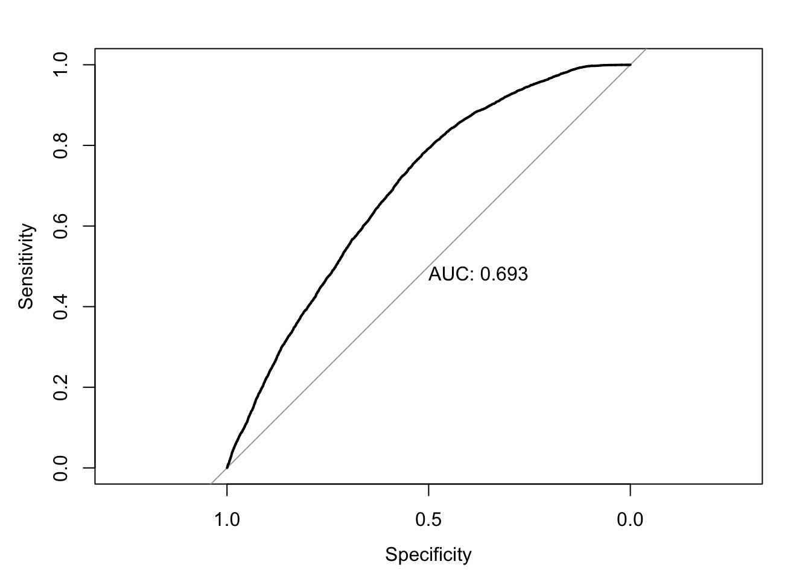

Successful completion of residential opioid treatment
Abby Stevens
2020-11-25
Last updated: 2020-11-25
Checks: 7 0
Knit directory: teds_ml/
This reproducible R Markdown analysis was created with workflowr (version 1.6.2). The Checks tab describes the reproducibility checks that were applied when the results were created. The Past versions tab lists the development history.
Great! Since the R Markdown file has been committed to the Git repository, you know the exact version of the code that produced these results.
Great job! The global environment was empty. Objects defined in the global environment can affect the analysis in your R Markdown file in unknown ways. For reproduciblity it’s best to always run the code in an empty environment.
The command set.seed(20201124) was run prior to running the code in the R Markdown file. Setting a seed ensures that any results that rely on randomness, e.g. subsampling or permutations, are reproducible.
Great job! Recording the operating system, R version, and package versions is critical for reproducibility.
Nice! There were no cached chunks for this analysis, so you can be confident that you successfully produced the results during this run.
Great job! Using relative paths to the files within your workflowr project makes it easier to run your code on other machines.
Great! You are using Git for version control. Tracking code development and connecting the code version to the results is critical for reproducibility.
The results in this page were generated with repository version 630f9ed. See the Past versions tab to see a history of the changes made to the R Markdown and HTML files.
Note that you need to be careful to ensure that all relevant files for the analysis have been committed to Git prior to generating the results (you can use wflow_publish or wflow_git_commit). workflowr only checks the R Markdown file, but you know if there are other scripts or data files that it depends on. Below is the status of the Git repository when the results were generated:
Ignored files:
Ignored: .DS_Store
Ignored: analysis/.DS_Store
Untracked files:
Untracked: analysis/opioid_completion_2017_CV.Rmd
Untracked: data/.ipynb_checkpoints/
Untracked: data/TEDS-D-2007-DS0001-data-excel.tsv
Untracked: data/clean_data.ipynb
Untracked: data/teds4aequitas.csv
Untracked: data/tedsa_puf_2017.csv
Untracked: data/tedsd_puf_2017.csv
Untracked: teds_predictions.csv
Unstaged changes:
Modified: analysis/feature_exploration.Rmd
Modified: code/teds_utils.R
Note that any generated files, e.g. HTML, png, CSS, etc., are not included in this status report because it is ok for generated content to have uncommitted changes.
These are the previous versions of the repository in which changes were made to the R Markdown (analysis/opioid_completion_2017.Rmd) and HTML (docs/opioid_completion_2017.html) files. If you’ve configured a remote Git repository (see ?wflow_git_remote), click on the hyperlinks in the table below to view the files as they were in that past version.
| File | Version | Author | Date | Message |
|---|---|---|---|---|
| Rmd | 630f9ed | Abby Stevens | 2020-11-25 | wflow_publish(c(“analysis/index.Rmd”, “analysis/opioid_completion_2017.Rmd”)) |
Experimental setting
Refer to the codebook for variable descriptions.
Response: Successful completion of short or long-term opioid treatment. Features: See myvars defined below.
mydata <- read.csv("data/tedsd_puf_2017.csv")
# filter
mydata <- mydata %>% filter(SUB1 %in% c(5,6,7), SERVICES %in% c(4,5))
mydata$COMPLETED = ifelse(mydata$REASON==1, 1, 0) #create response variable
myvars <- c("ROUTE1", "ALCFLG", "FREQ1", "FRSTUSE1", "IDU","COKEFLG", "BENZFLG", "PSYPROB", "HLTHINS", "PRIMPAY", "AGE", "GENDER", "LIVARAG", "DIVISION", "METHUSE", "NOPRIOR", "EDUC", "HERFLG","RACE","MARSTAT","PRIMINC","ETHNIC","ARRESTS_D")
response = "COMPLETED"
teds <- as.data.frame(lapply(mydata[myvars], factor))
teds[, response] = mydata[, response]Exploratory analysis
First, we check to see if our classes are balanced.
table(teds[,response])
0 1
52681 46576 In this case it looks ok! Next, we can vizualize some (or all) of the relationships between the features and the response. Here we just look at 3 of the variables so it’s less chaotic.
sbs_response_plots(teds, c("DIVISION", "HLTHINS", "RACE"), response)

Next, split the data into training and testing sets, using 3/4 of the data for training and holding out 1/4 for testing.
set.seed(123) #for replicability
teds_split = initial_split(teds, prop=3/4)
# extract training and testing sets
teds_train <- training(teds_split)
teds_test <- testing(teds_split)Logistic regression
Now, we fit a logistic regression model on our training data. We display the coefficients as well as the predictive performance on the test data.
fm <- as.formula(paste(response, "~ ."))
lg = glm(fm, family=binomial, data=teds_train)
summary(lg)
Call:
glm(formula = fm, family = binomial, data = teds_train)
Deviance Residuals:
Min 1Q Median 3Q Max
-2.2481 -1.1069 -0.3441 1.0646 2.8699
Coefficients:
Estimate Std. Error z value Pr(>|z|)
(Intercept) -0.074783 0.931428 -0.080 0.936008
ROUTE11 -0.055141 0.105335 -0.523 0.600639
ROUTE12 0.181537 0.106732 1.701 0.088968 .
ROUTE13 -0.007489 0.102332 -0.073 0.941657
ROUTE14 -0.015701 0.119079 -0.132 0.895097
ROUTE15 -0.411816 0.127211 -3.237 0.001207 **
ALCFLG1 0.053109 0.022599 2.350 0.018769 *
FREQ11 -0.055183 0.035745 -1.544 0.122642
FREQ12 -0.168414 0.035906 -4.690 2.73e-06 ***
FREQ13 -0.250480 0.031639 -7.917 2.44e-15 ***
FRSTUSE11 -0.119320 0.135101 -0.883 0.377131
FRSTUSE12 0.031103 0.102975 0.302 0.762618
FRSTUSE13 0.074805 0.099221 0.754 0.450895
FRSTUSE14 0.125165 0.098702 1.268 0.204757
FRSTUSE15 0.106694 0.098816 1.080 0.280264
FRSTUSE16 0.111449 0.099223 1.123 0.261344
FRSTUSE17 0.155761 0.099578 1.564 0.117767
IDU0 -0.072757 0.030384 -2.395 0.016640 *
IDU1 -0.125724 0.065311 -1.925 0.054228 .
COKEFLG1 -0.082264 0.019123 -4.302 1.69e-05 ***
BENZFLG1 -0.029707 0.024353 -1.220 0.222514
PSYPROB1 -0.641083 0.040120 -15.979 < 2e-16 ***
PSYPROB2 -0.628650 0.039396 -15.957 < 2e-16 ***
HLTHINS1 0.212887 0.075674 2.813 0.004905 **
HLTHINS2 -0.195319 0.034398 -5.678 1.36e-08 ***
HLTHINS3 -0.185328 0.054918 -3.375 0.000739 ***
HLTHINS4 -0.130734 0.038239 -3.419 0.000629 ***
PRIMPAY1 -0.055155 0.083990 -0.657 0.511383
PRIMPAY2 0.230260 0.091195 2.525 0.011572 *
PRIMPAY3 -0.226957 0.184827 -1.228 0.219468
PRIMPAY4 -0.469837 0.035679 -13.168 < 2e-16 ***
PRIMPAY5 -0.214725 0.035139 -6.111 9.92e-10 ***
PRIMPAY6 -0.811757 0.101081 -8.031 9.69e-16 ***
PRIMPAY7 -0.261398 0.062575 -4.177 2.95e-05 ***
AGE2 0.539046 0.645089 0.836 0.403371
AGE3 0.423637 0.634427 0.668 0.504295
AGE4 0.486913 0.633153 0.769 0.441876
AGE5 0.540364 0.633054 0.854 0.393337
AGE6 0.524057 0.633133 0.828 0.407829
AGE7 0.568114 0.633315 0.897 0.369693
AGE8 0.564978 0.633680 0.892 0.372617
AGE9 0.690529 0.633807 1.089 0.275936
AGE10 0.769965 0.634065 1.214 0.224621
AGE11 0.929130 0.634220 1.465 0.142922
AGE12 0.794067 0.644433 1.232 0.217876
GENDER1 -0.288509 0.553430 -0.521 0.602151
GENDER2 -0.311933 0.553503 -0.564 0.573053
LIVARAG1 -0.121338 0.069404 -1.748 0.080417 .
LIVARAG2 -0.076452 0.069055 -1.107 0.268243
LIVARAG3 -0.006117 0.068245 -0.090 0.928580
DIVISION1 -0.104313 0.372718 -0.280 0.779575
DIVISION2 -0.051716 0.372737 -0.139 0.889651
DIVISION3 -1.113403 0.373578 -2.980 0.002879 **
DIVISION4 -0.981440 0.373728 -2.626 0.008637 **
DIVISION5 -1.237248 0.373655 -3.311 0.000929 ***
DIVISION6 -0.858335 0.374672 -2.291 0.021970 *
DIVISION7 -0.606586 0.373348 -1.625 0.104223
DIVISION8 -0.268254 0.374761 -0.716 0.474115
DIVISION9 -0.379702 0.376227 -1.009 0.312861
METHUSE1 -0.484507 0.045088 -10.746 < 2e-16 ***
METHUSE2 -0.423246 0.041614 -10.171 < 2e-16 ***
NOPRIOR0 -1.019753 0.057863 -17.624 < 2e-16 ***
NOPRIOR1 -1.013856 0.056250 -18.024 < 2e-16 ***
EDUC1 -0.413502 0.081511 -5.073 3.92e-07 ***
EDUC2 -0.175595 0.075354 -2.330 0.019793 *
EDUC3 -0.091853 0.073865 -1.244 0.213678
EDUC4 -0.010748 0.075030 -0.143 0.886093
EDUC5 0.012391 0.081728 0.152 0.879496
HERFLG1 -0.119606 0.030409 -3.933 8.38e-05 ***
RACE1 -0.683595 0.278363 -2.456 0.014059 *
RACE2 -0.272081 0.098773 -2.755 0.005876 **
RACE3 0.702415 1.417680 0.495 0.620270
RACE4 -0.272038 0.080008 -3.400 0.000674 ***
RACE5 -0.084201 0.074608 -1.129 0.259079
RACE6 0.070537 0.133343 0.529 0.596814
RACE7 -0.276072 0.079745 -3.462 0.000536 ***
RACE8 -0.331306 0.087294 -3.795 0.000147 ***
RACE9 -0.502757 0.175647 -2.862 0.004206 **
MARSTAT1 -0.049671 0.050663 -0.980 0.326880
MARSTAT2 -0.045467 0.057395 -0.792 0.428256
MARSTAT3 -0.098949 0.062144 -1.592 0.111325
MARSTAT4 -0.050040 0.056447 -0.886 0.375351
PRIMINC1 0.472276 0.039677 11.903 < 2e-16 ***
PRIMINC2 0.110477 0.043213 2.557 0.010571 *
PRIMINC3 0.070648 0.060011 1.177 0.239097
PRIMINC4 0.269031 0.038284 7.027 2.11e-12 ***
PRIMINC5 0.189268 0.032582 5.809 6.29e-09 ***
ETHNIC1 0.210828 0.064560 3.266 0.001092 **
ETHNIC2 0.168143 0.073815 2.278 0.022732 *
ETHNIC3 0.314452 0.073952 4.252 2.12e-05 ***
ETHNIC4 0.275674 0.052715 5.230 1.70e-07 ***
ETHNIC5 0.129496 0.078746 1.644 0.100078
ARRESTS_D0 2.563898 0.067326 38.082 < 2e-16 ***
ARRESTS_D1 2.039389 0.078217 26.074 < 2e-16 ***
ARRESTS_D2 2.063834 0.112932 18.275 < 2e-16 ***
---
Signif. codes: 0 '***' 0.001 '**' 0.01 '*' 0.05 '.' 0.1 ' ' 1
(Dispersion parameter for binomial family taken to be 1)
Null deviance: 102873 on 74442 degrees of freedom
Residual deviance: 92543 on 74348 degrees of freedom
AIC: 92733
Number of Fisher Scoring iterations: 5test_prob = predict(lg, newdata = teds_test, type = "response")
test_roc = roc(teds_test$COMPLETED ~ test_prob, plot = TRUE, print.auc = TRUE)
For this experiment, our baseline AUC using logistic regression is 0.69.
Random forest
Next, we fit a random forest model to the same training data. We are just using the default parameterizations here; previous experimentation showed that there wasn’t much variance across parameters, so I’m comfortable doing this for these experiments.
rf <- teds_rf(teds, myvars, response)The rf_cv object returned includes 4 things: the model specification, the test performance, and the test predictions. First we look at the test performance:
rf$test_performance# A tibble: 2 x 3
.metric .estimator .estimate
<chr> <chr> <dbl>
1 accuracy binary 0.675
2 roc_auc binary 0.741In this case, we see that the AUC=0.742 on the test set, an improvement over the logistic regression. We can use the test predictions to generate the ROC curve:
# plot roc cruve
autoplot(roc_curve(rf$test_predictions, !!response, .pred_0))Finally, we compute and visualize the feature importances. ## Feature importance
teds[,response] = as.factor(teds[[response]])
final_model <- fit(rf$model, teds)
final_model %>%
pull_workflow_fit() %>%
vip()
sessionInfo()R version 4.0.0 (2020-04-24)
Platform: x86_64-apple-darwin17.0 (64-bit)
Running under: macOS 10.16
Matrix products: default
BLAS: /Library/Frameworks/R.framework/Versions/4.0/Resources/lib/libRblas.dylib
LAPACK: /Library/Frameworks/R.framework/Versions/4.0/Resources/lib/libRlapack.dylib
locale:
[1] en_US.UTF-8/en_US.UTF-8/en_US.UTF-8/C/en_US.UTF-8/en_US.UTF-8
attached base packages:
[1] stats graphics grDevices utils datasets methods base
other attached packages:
[1] gridExtra_2.3 reshape2_1.4.4 vip_0.2.2 pROC_1.16.2
[5] yardstick_0.0.7 workflows_0.2.1 tune_0.1.1 rsample_0.0.8
[9] recipes_0.1.14 parsnip_0.1.4 modeldata_0.1.0 infer_0.5.3
[13] dials_0.0.9 scales_1.1.1 broom_0.7.2 tidymodels_0.1.1
[17] forcats_0.5.0 stringr_1.4.0 dplyr_1.0.2 purrr_0.3.4
[21] readr_1.3.1 tidyr_1.1.2 tibble_3.0.4 ggplot2_3.3.2
[25] tidyverse_1.3.0 workflowr_1.6.2
loaded via a namespace (and not attached):
[1] colorspace_1.4-1 ellipsis_0.3.1 class_7.3-16 rprojroot_1.3-2
[5] fs_1.4.1 rstudioapi_0.11 farver_2.0.3 listenv_0.8.0
[9] furrr_0.2.1 prodlim_2019.11.13 fansi_0.4.1 lubridate_1.7.8
[13] ranger_0.12.1 xml2_1.3.2 codetools_0.2-16 splines_4.0.0
[17] knitr_1.28 jsonlite_1.6.1 dbplyr_1.4.3 compiler_4.0.0
[21] httr_1.4.1 backports_1.1.8 assertthat_0.2.1 Matrix_1.2-18
[25] cli_2.0.2 later_1.1.0.1 htmltools_0.4.0 tools_4.0.0
[29] gtable_0.3.0 glue_1.4.1 Rcpp_1.0.4.6 cellranger_1.1.0
[33] DiceDesign_1.8-1 vctrs_0.3.4 iterators_1.0.12 timeDate_3043.102
[37] gower_0.2.1 xfun_0.13 globals_0.13.1 rvest_0.3.5
[41] lifecycle_0.2.0 future_1.19.1 MASS_7.3-51.5 ipred_0.9-9
[45] hms_0.5.3 promises_1.1.1 parallel_4.0.0 yaml_2.2.1
[49] rpart_4.1-15 stringi_1.4.6 foreach_1.5.0 lhs_1.0.2
[53] hardhat_0.1.4 lava_1.6.7 rlang_0.4.8 pkgconfig_2.0.3
[57] evaluate_0.14 lattice_0.20-41 labeling_0.3 tidyselect_1.1.0
[61] plyr_1.8.6 magrittr_1.5 R6_2.4.1 generics_0.0.2
[65] DBI_1.1.0 pillar_1.4.4 haven_2.2.0 whisker_0.4
[69] withr_2.2.0 survival_3.1-12 nnet_7.3-14 modelr_0.1.8
[73] crayon_1.3.4 utf8_1.1.4 rmarkdown_2.1 grid_4.0.0
[77] readxl_1.3.1 git2r_0.27.1 reprex_0.3.0 digest_0.6.25
[81] httpuv_1.5.4 GPfit_1.0-8 munsell_0.5.0